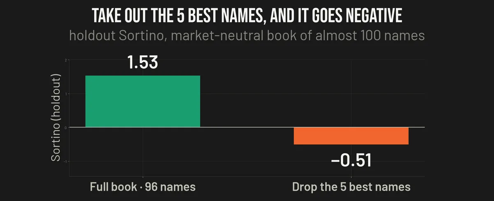
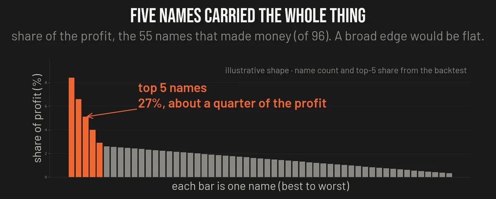

Does Statistical Arbitrage Work for Retail Traders? Tested
NOT AT RETAIL.
A market-neutral stat-arb book was built and tested against a bar of MAR 0.5 and Sortino 1.0, net of 2x modeled costs, on an untouched holdout. ETF and basket pairs failed first: 15 of 47 spreads looked promising and 0 cleared the bar. A PCA residual book across 96 large caps then passed, with a holdout Sortino of 1.53 and MAR of 0.94. Deleting the five best names flipped Sortino to -0.51, and winners did not persist from training to holdout (rank correlation -0.12). At retail, the turnover pays the spread that institutional desks get paid.


The receipts
The code and result files behind every number on this page.
Browse the receipts for this episodeRelated autopsies
- How Much Backtesting Is Enough? 11 Strategies TestedVerdict: NOT THE QUESTION.
- Can an AI Model Forecast Volatility? Kronos vs a 1990s FormulaVerdict: BEATEN BY A FORMULA.
- Does Momentum Investing Work? 16 Years TestedVerdict: JUST BETA.